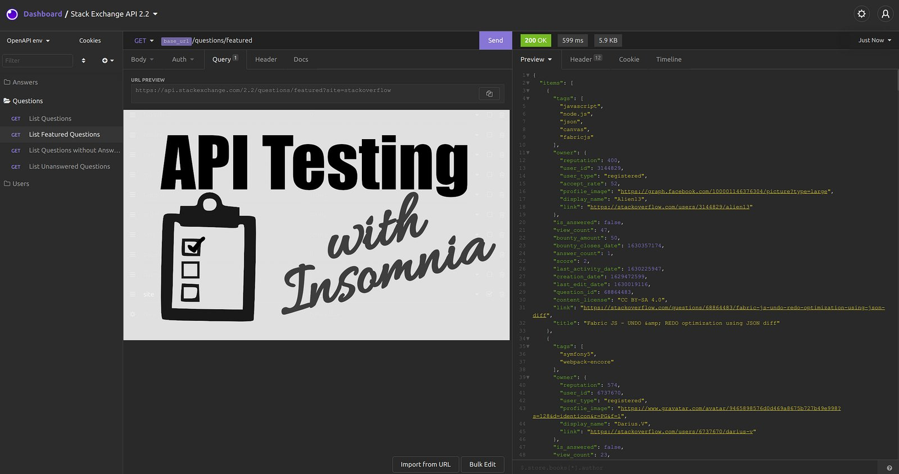
Testing is a crucial part of software development. It comes in different flavors such as unit testing, stress testing, acceptance testing, smoke testing. “Just giving it a shot” is probably the simplest of them all, but crucial to be convinced that things work as they should.
After reading this article, you will know how to use Insomnia for API testing. We will go through the request collection interface of Insomnia, look at environments, and request chaining. Let’s get started!
The Basics
If you don’t know what an endpoint, HTTP methods, or status codes are, please feel free to refresh your knowledge:
Getting started with Insomnia
You can download and install Insomnia for free (link). There is a paid version with additional features, but you will not need it for now.
First, create a “request collection”:

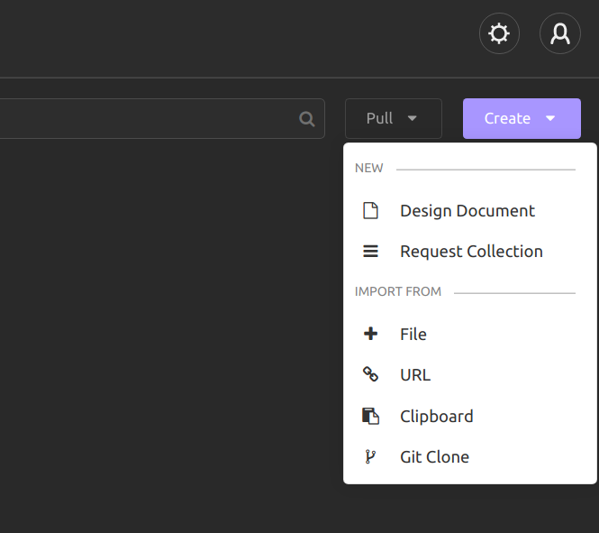
Create a GET request
Click on “New Request” or hit Ctrl + N and enter “Get names gender” as the request name. Enter https://api.genderize.io/ for the URL and go to the “Query” tab. Enter “name” as “New name” and “Andreas” as value. Hit the purple “Send” button:

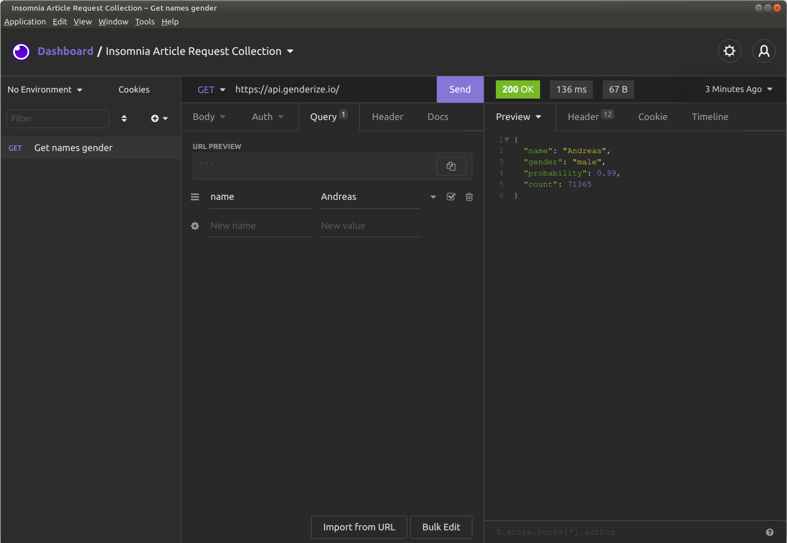
The Headers Tab
Click on the “Headers” tab to see the response headers:

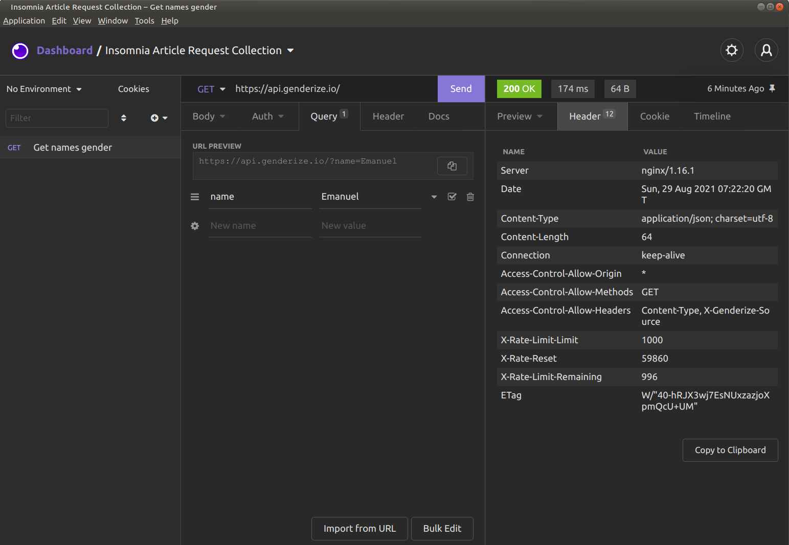
The Timeline Tab
The timeline tab shows you the sequence of the request and response. I actually never use this one:

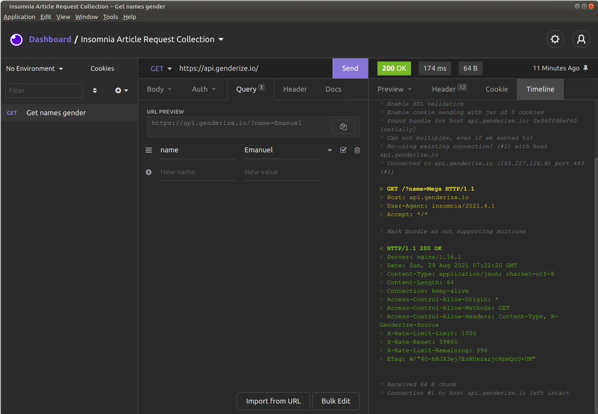
The Response History Overview
Send a few more requests with different names. Then look at the bright green status code — at the very right, there is something like “A Minute Ago” / “Just Now”. If you click on it, you can see the response history:

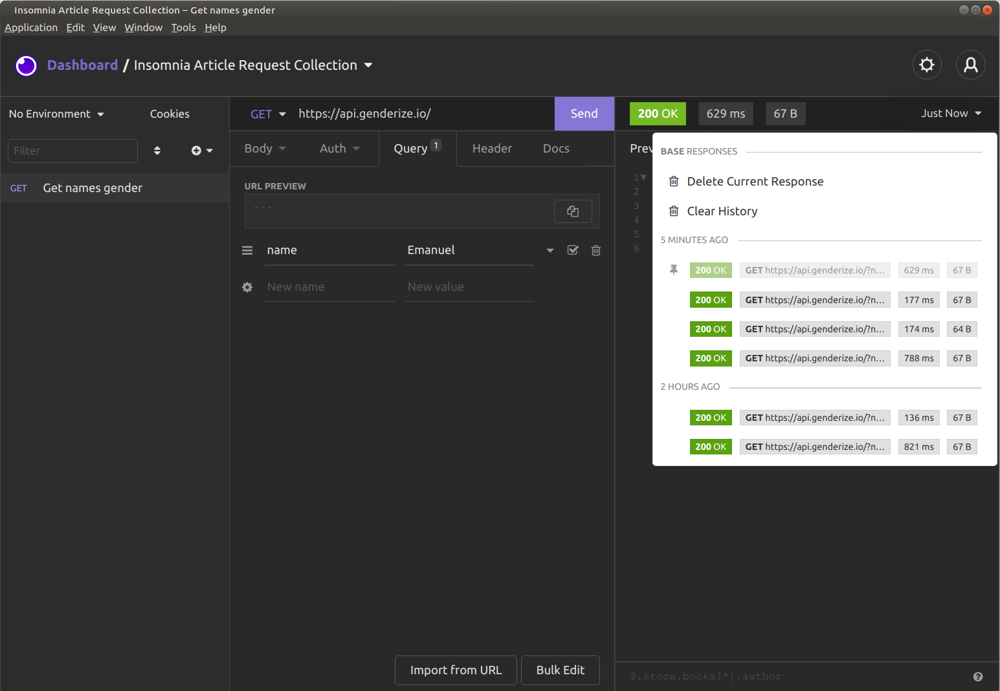
If you click on any of those responses, you can look at the actual response, the headers, and the timeline.
Using Environments
Now that you have seen some of the basics of the UI, it’s time to use a core feature: Environments. If you look at the top left, just below “Dashboard”, you can see “No Environment”. Let’s click on that and hit “Manage Environments”. Alternatively, hit Ctrl+E. Look at the “Sub Environments”, click on the “+” and click on “Environment”:

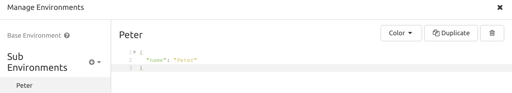
Now duplicate the environment and create a “Karen” environment:

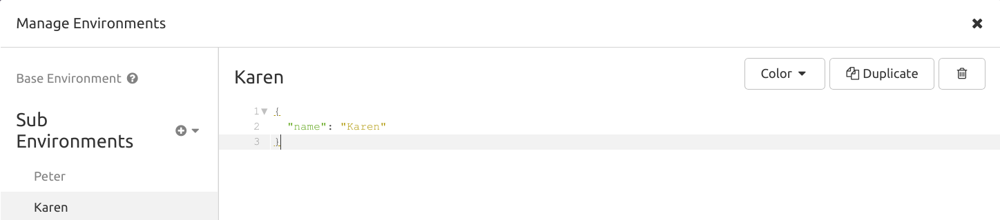
Close the “Manage Environments” window. Use the “Peter” environment:

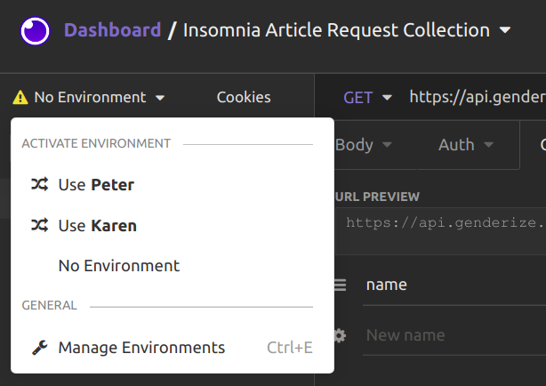
Now go to the “Query” tab to the “name” key. The value probably was “Peter” — remove it. Hit Ctrl + Space. You should see a ton of options:

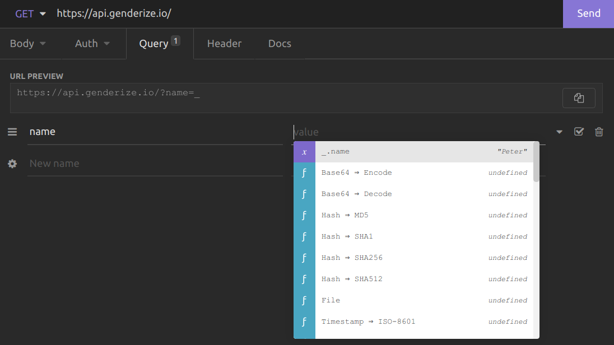
Select _.name. You could also have entered _.name directly. Now when you send the request, it uses the value of the “name” variable from your environment.
That means if you change the environment, the request you send will change.
This is incredibly useful. You might want to test different runtime environments such as dev, staging, integration, pre-production, production. You might want to test the responses for different users. Just create environments for those cases.
Chaining Requests
Most APIs need some form of authentication. Typically, that means that you log in and receive a bearer token. This token has to be sent in all further requests.
To do that, go to “Header” and enter the key “Authorization”. As a value, you enter “Bearer “ and hit Ctrl+Space. Then enter “Response → Body attribute”:

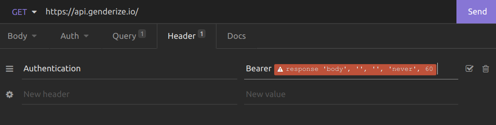
When you click on the red block, you get this:

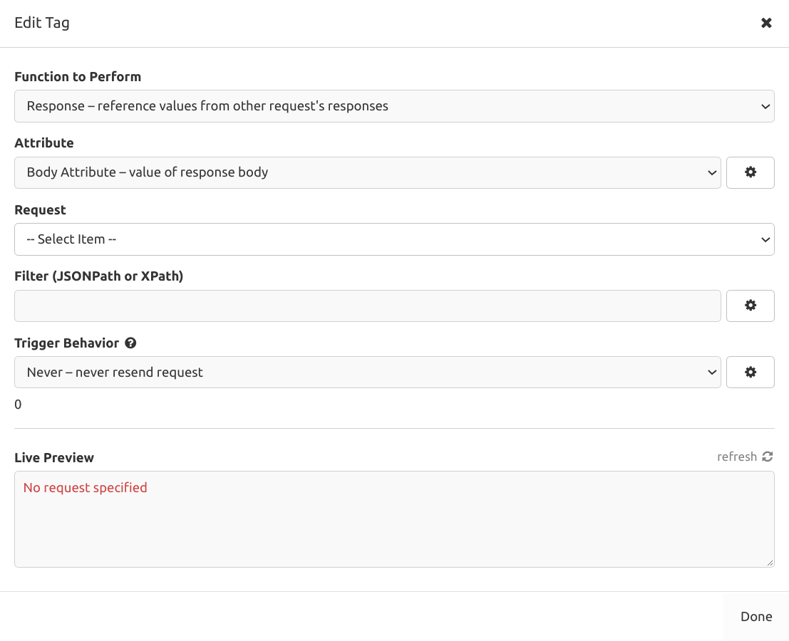
We only have one “Request” so far and no API where we need authentication, but it’s good enough for demonstration. Select the request. In the “Filter” field, enter $. Now you should see something in the live preview:

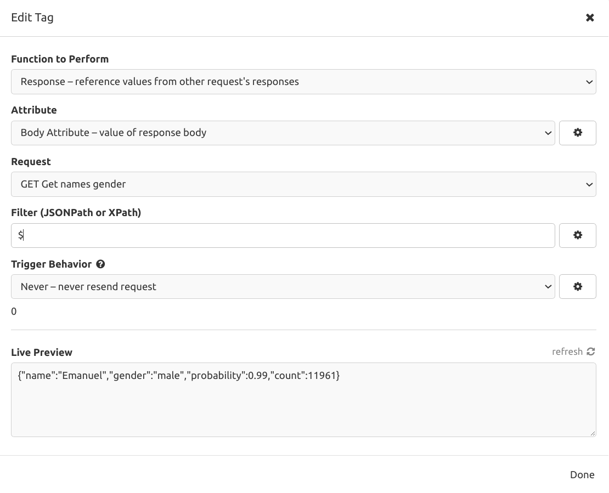
The syntax we use here is called JSONPath. If you enter $.gender the value this macro will get will be “male”. For access tokens, you might use something like $.access. It depends on the response of the server and what you want to re-use.
Sharing Requests
Insomnia can both import and export curl commands. curl is a very powerful tool to send HTTP requests. It’s free and almost every developer will know it. A lot of tools rely on it.

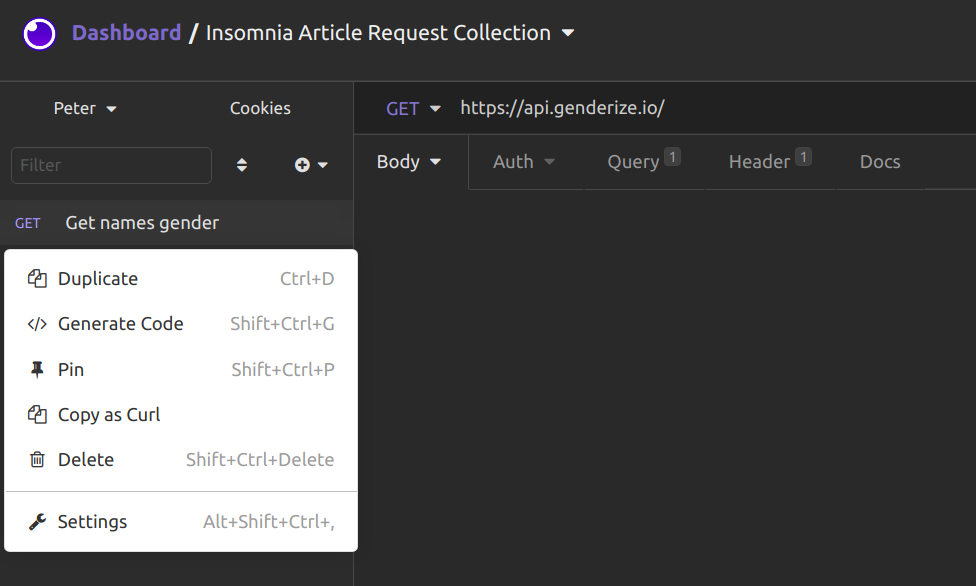
Although “Copy as Curl” is a good option, your developers might prefer others. For example, I like Python code with the requests library. To get that, click on “Generate Code”:

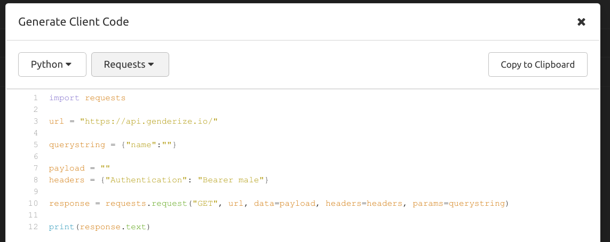
Summary
You have seen how to create custom requests. Using environments and request chaining, you can get way more out of those single requests. We have looked at different meta-information such as the request timeline. Finally, you have seen how to share requests with developers.